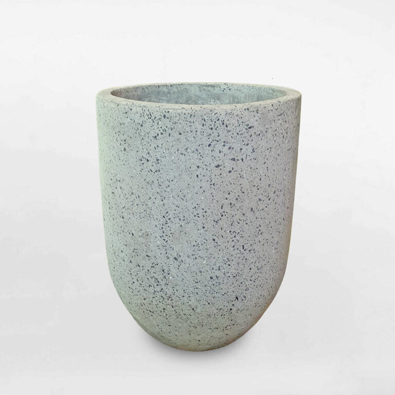
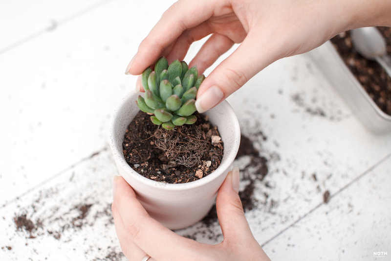
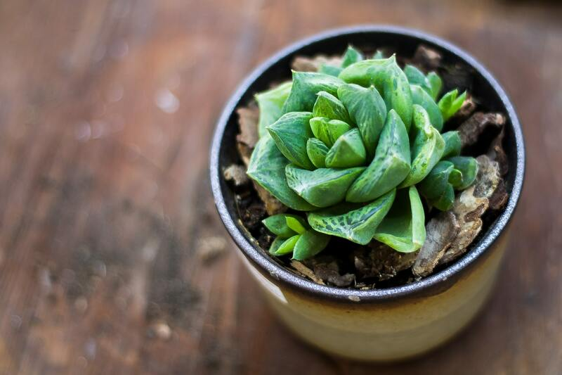
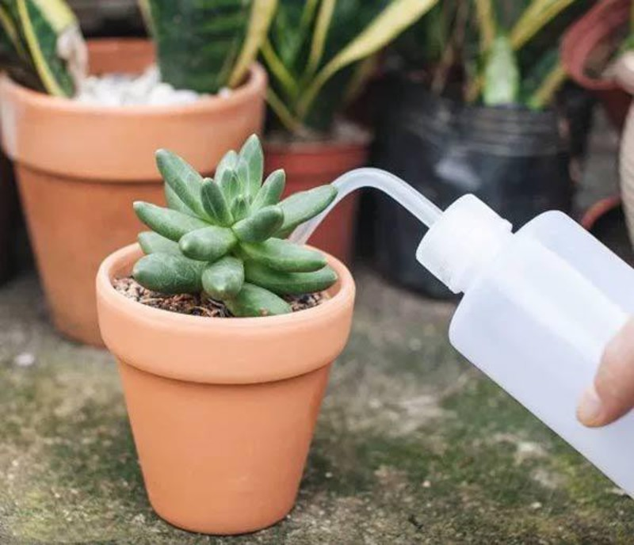
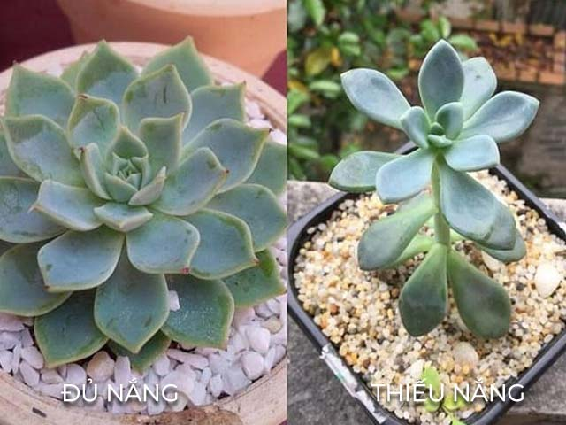
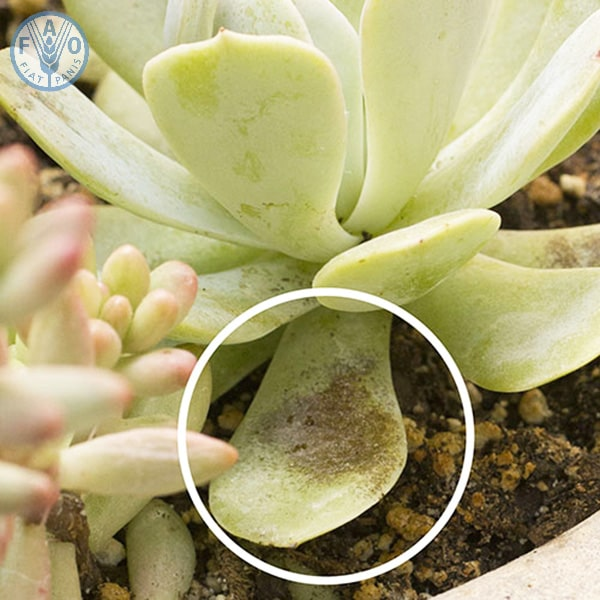
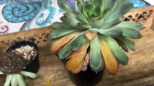

Cách Chăm Sóc Sen Đá
1. Cách chăm sen đá khi mới mua về
1.1. Chọn chậu cho sen đá
Tùy vào sở thích để tìm hình dáng của chậu trồng sen đá, nhưng vẫn nên suy nghĩ kỹ khi chọn chất liệu và kích thước phù hợp nhất. Vì cây không chịu được ngập úng nên chậu phải có lỗ thoát nước tốt và nên làm từ đất nung hoặc gỗ có khả năng hút nước cao. Bên cạnh đó, cũng không thể chọn chậu quá nhỏ sẽ làm cây bị kìm hãm sinh trưởng, nếu quá to chứa nhiều giá thể sẽ giữ lại nhiều nước dễ úng rễ.
1.2. Trộn đất cho sen đá
Để sen đá thích nghi và phát triển tốt, thì đất trồng phù hợp là yếu tố vô cùng quan trọng. Cây dễ bị úng và chế khi bị ngậm rễ và đất quá ẩm, vậy nên đất phải thông thoáng, dễ thoát nước và cung cấp đủ dinh dưỡng cho cây. Bạn có thể tham khảo cách phối trộn đất sau: Đá Pumice + đá Perlite + trấu hun + phân Trùn quế SFARM theo tỉ lệ 2:1:2:1.
1.3. Thay chậu cho cây
Vấn đề thay chậu cũng tùy vào đối tượng là loại sen đá nào, thời gian từ tháng 3-4 là lúc tiến hành "chuyển nhà" tốt nhất. Khi cây đã phát triển to hơn, đất trồng hết dinh dưỡng hoặc điều trị nấm bệnh, đều là thời điểm bạn nên thay chậu mới. Lưu ý cần ngưng tưới nước 3-5 ngày trước khi thực hiện.
2. Cách chăm sóc sen đá sau khi thay chậu
2.1. Tưới nước
2.1.1. Tưới bao nhiêu nước là đủ?
Cách chăm sóc sen đá không đòi hỏi lượng nước cố định và khả năng chịu hạn của mỗi loại cũng khác nhau. Có loại chỉ cần tưới nước 1 tháng/lần hoặc loại ngày nào cũng phải chăm sóc tưới nước.
2.1.2. Khi nào cần tưới nước cho sen đá?
Đôi khi phải xem điều kiện thời tiết để quyết định có nên tưới nước cho sen đá hôm nay hay không, chỉ nên tưới khi đất trồng đã khô ráo hoàn toàn. Sen đá thích được tưới mát vào buổi sáng (7-8h).
2.2. Ánh sáng
Là loại ưa nắng nên sen đá rất cần được tắm nắng hằng ngày, để trao đổi chất và lên màu chuẩn. Nếu thiếu nắng thì màu lá nhạt dần, thân dễ vươn cao và các tần lá thưa thớt.
3. Cách chăm sóc sen đá khi gặp những vấn đề về sâu bệnh
3.1. Vàng lá
Nguyên nhân chủ yếu là do điều kiện môi trường hoặc cách chăm sóc không hợp lý như nhiệt độ quá cao, cây bị thiếu dinh dưỡng, nguồn nước,...
3.2. Cây bị úng, rụng lá
Biểu hiện một số lá dưới cùng bị nhũn hoặc màu lá chuyển màu thâm đen và các lá trên cùng bị rụng dần. Nguyên nhân làm úng, rụng lá là do đất trồng không thông thoáng và tưới quá nhiều nước hoặc động nước trên lá.